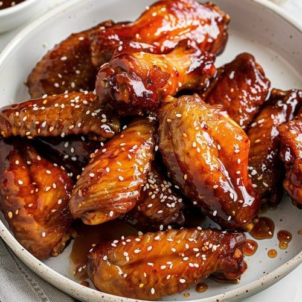

Alitas de Pollo Chinas
Chinese Chicken Wings
Alitas sazonadas con salsa de soya, jengibre y cinco especias chinas, fritas a la perfección con un toque crujiente.
Seasoned chicken wings with soy sauce, ginger, and five Chinese spices, perfectly fried with a crispy touch.
Precio: $380 DOP
Price: $7 USD
Porción de 6 piezas impregnadas en marinada artesanal con toque sutil de cebollín y ajonjolí.
Portion of 6 pieces soaked in artisanal marinade with a subtle touch of chives and sesame seeds.